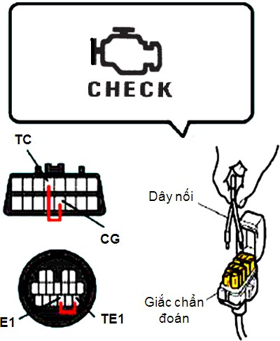
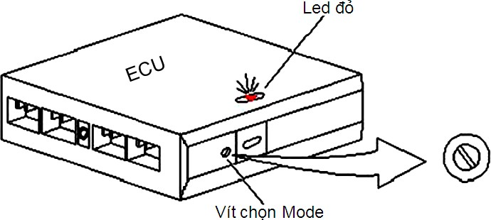

-
Hãng Toyota.
- Điện áp ắc quy khoảng 12 vôn.
- Để tay số ở vị trí N.
- Tắt tất cả các phụ tải trên xe.
- Xoay công tắc máy On.
- Nối tắt cực TC với CG hoặc TE1 với E1 ở đầu kiểm tra.
- Đọc mã lỗi trên đèn MIL. Mã được báo từ thấp đến cao
- Tra tài liệu để xác định vùng hư hỏng.
- Kiểm tra và sửa chữa.
- Xoá mã lỗi bằng cách tháo cầu chì EFI hoặc cầu chì STOP trong thời gian tối thiểu 15 giây.
- Kiểm tra lại mã lỗi.

Hình 3.47: Sơ đồ chẩn đoán bằng tay.
Dùng đoạn dây điện nối tắt 2 đầu của giắc kiểm tra: lỗ E1 và TE1. Khi đó đèn check engine chớp theo những nhịp phụ thuộc vào tình trạng của hệ thống. Nếu tình trạng bình thường thì đèn chớp đều đặn 2 lần/giây.
Nếu xe có sự cố ở bộ phận nào của hệ thống đèn check sẽ chớp theo những chuỗi khác nhau, mỗi chuỗi chớp ứng với một mã số hư hỏng.
Nếu trong hệ thống chỉ có một sự cố thì các mã này sẽ lặp lại sau khoảng nghỉ 4,5s. Nếu có nhiều sự cố thì hệ thống chẩn đoán sẽ phát lần lượt các mã số sự cố từ thấp đến cao. Khoảng nghỉ giữa sự cố này với sự cố kia là 2,5s.
Xác định mã lỗi: để tìm chẩn đoán hư hỏng ở các bộ phận xe.
Xoá mã lỗi: Dùng để xoá bộ nhớ cũ (code cũ) và nạp lại từ đầu (code mới) sau khi đã sửa chữa hư hỏng.
-
Hãng Honda.
- Các xe sản xuất từ năm 1985 đến 1990 đèn check được bố trí ở bảng đồng hồ và đèn kiểm tra mã lỗi bố trí ở ECU động cơ (Đặt bên dưới ghế hành khách). Để đọc mã lỗi, xoay công tắc máy on và quan sát sự chớp tắt của đèn.
- Tất cả các xe sản xuất năm từ 1991 muốn kiểm tra mã lỗi phải nối tắt giắc chẩn đoán bố trí phía bên ghế hành khách và đọc mã lỗi trên đèn Check.
- Để xoá mã lỗi ở các xe, tháo cực âm của ắc quy trong thời gian tối thiểu là 10 giây.
-
Hyundai.
- Các đời xe sản xuất từ năm 1993 đến 1995 để kiểm tra mã lỗi, xoay công tắc máy on, nối tắt cực số 10 với mát (Cực8) và đọc mã lỗi trên đèn Check Engine để xác định vùng hư hỏng
- Để xoá mã lỗi, tháo cực âm ắc quy trong thời gian tối thiểu là 15 giây.
-
Mazda.
- Các xe sản xuất từ 1992 đến 1995 để đọc mã lỗi nối tắt cực TEN với GND ở đầu kiểm tra và đọc mã lỗi trên đèn MIL.
- Để xoá mã lỗi, tháo cực âm ắc quy và đạp phanh trong 20 giây. Nối lại cực âm ắc quy, xoay công tắc máy on khoảng 6 giây, sau đó khởi động và chạy ở tốc độ 2000 v/p trong 3 phút. Nếu đèn MIL không báo lỗi thì mã lỗi đã được xoá.
-
Nissan.
Từ năm 1990 đến 1995 hãng Nissan có hai kiểu hệ thống chẩn đoán: Kiểu dùng hai led và kiểu mới sử dụng một led.
Kiểu dùng hai led.
- Xoay công tắc máy On.
- Xoay vít lựa chọn Mode bố trí ở ECU theo chiều kim đồng hồ tối đa.
- Kiểm tra sự chớp của led: Một lần là Mode 1, hai lần là Mode 2.
- Khi led chớp 3 lần (Mode 3), xoay vit lựa chọn Mode tối đa theo ngược chiều kim đồng hồ.
- Đầu tiên led đỏ chớp biểu thị hàng chục, sau đó đèn xanh chớp biểu thị hàng đơn vị.
- Ví dụ, led đỏ chớp 3 lần và led xanh chơp1 lần thì mã lỗi là 31.
- Để xoá mã lỗi, xoay vít chọn Mode tối đa theo chiều kim đồng hồ, khi led chớp 4 lần xoay vít chọn mode ngược trở lại và xoay công tắc Off.
- Kiểu dùng một led.
- Kiểu này trong hệ thống chẩn đoán chỉ có hai Mode, Mode 2 là của hệ thống tự chẩn đoán.
- Led đỏ sáng trong khoảng thời gian dài (0,6 giây) biểu thị hàng chục và thời gian sáng ngắn (0,3 giây) biểu thị hàng đơn vị.

Hình 3.48: Hộp điều khiển động cơ (ECU) hãng Nissan.